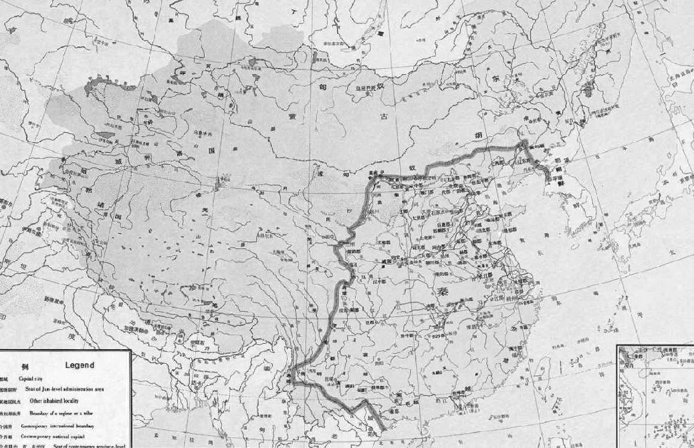

第七章 王安石变法
王氏兄弟在神宗熙宁二年（一〇六九年）到达京师。从那年起，中国则在政潮汹涌中卷入新社会的实验里，而此一政治波浪所引起的冲击震荡不绝，直到宋朝灭亡而后已。这是中国最后一次的国家资本主义的实验，绝不是第一次。在中国四千年的历史上，有四次变法，结果都归于惨败。最成功的一次是法家商鞅的法西斯极权主义，因为商鞅的学说由秦始皇——万里长城的筑造人，认真地实行出来。这个早期法西斯学说有二大特色，一为崇武，一为重农，但是这两项仍是合而为一的，因为商鞅坚信有勤苦之农民乃有勇武之精兵，中产阶级的商人贸易者，应当力予制压。但是，尽人皆知，那个威力强大的军事组织依照此一学说建立，随后发展起来，且使秦国的专政之君统一了全中国，正当这样的政治学说要应用于全中国之时，一个庞大无比的帝国真是出人意料，竟在数年之内崩溃了。
另外有两次激进的改革，一次是汉武帝时，一次是在王莽当政时。前一次是按照桑弘羊的国家资本财政论，虽然战争绵延，国库赖以增富，但是终以几乎招致叛乱而废止。后一次则因王莽被推翻而新政亦成泡影。所以，如今王安石变法成为第四次失败，固不足为奇。但是在此四次新的实验之中，每一次都是由一个具有创新力的思想家的观点出发，其人宁愿把过去全予屏弃，凭其信念与决心，全力以赴。王安石对商鞅极为钦佩，曾经写过一首诗吁请大家对他当有正确的了解，此一事颇具重要意味。同时，我们必须注意，凡有极权主义提出来，不论古时或现代，基本上的呼声都是为了国家和人民的利益。在历史上，多少政治上的罪恶都是假借“人民”的名义而犯下的，现代的读者自然不难明白。
王安石是个怪人，思想人品都异乎寻常。学生时代很勤勉，除去语言学极糟糕之外，还算得上是个好学者，当然也是宋朝一个主要的诗人。不幸的是，徒有基督救世之心，而无圆通机智处人治世之术，除去与他自己之外，与天下人无可以相处。毫无疑问，他又是一个不切实际的理想主义者。倘若我们说理想主义者指的是不注意自己的饮食和仪表的人，王安石正好就是这等人。王安石的衣裳肮脏，须发纷乱，仪表邋遢，他是以此等恶习为众所周知的。苏洵在《辨奸论》那篇文章里刻画王安石说：“衣臣虏之衣，食犬彘之食。”又说他“囚首丧面而谈诗书”。王安石是否喜欢以这样的特点异乎常人，我们无从知道，但是一个人把精力完全倾注在内在的思想上，自然会忽略了他的外表，这话倒不难相信。有一个故事流传下来，说他从来不换他的长袍。一天，几个朋友同他到一个寺院里的澡堂会。在他由浴池出来之前，朋友们特意偷偷地留在外头一件干净的长袍，用以测验他是否知道衣裳已经被换了。王安石洗完出来，把那件新袍子穿上，朋友动了手脚，他完全不知道。不管怎么样，他总是身上穿了件衣裳就行了。
又有一天，朋友们告诉王安石的胖太太，说她丈夫爱吃鹿肉丝。
胖太太大感意外，她说：“我不相信。他向来不注意吃什么，他怎么会突然爱吃鹿肉丝了呢？你们怎么会这样想？”
大家说：“在吃饭时他不吃别的盘子里的菜，只把那盘鹿肉丝吃光了，所以我们才知道。”
太太问：“你们把鹿肉丝摆在了什么地方？”
大家说：“摆在他正前面。”
太太明白了，向众人说：“我告诉你们，明天你们把别的菜摆在他前面，看会怎么样。”
朋友们第二天把菜的位置调换了，把鹿肉丝放得离他最远，大家留意他吃什么。王安石开始吃靠近他的菜，桌子上照常摆了鹿肉，他竟然完全不知道。
还有一个故事说王安石在扬州太守幕府时，彻夜读书。那时的太守是韩琦，他后来做了宰相。王安石总是苦读通宵，天将黎明之时才在椅子中打盹。等睡醒时，已然晚了，来不及洗脸、梳头发，便连忙跑到办公室上班。韩琦一看他那副样子，以为他彻夜纵情声色，就向他劝导几句。
韩琦说：“老弟，我劝你趁着年轻，多用功念点儿书吧。”
秦朝疆域图 地图 现代
商鞅的变法为秦始皇最终统一中国奠定了基础，不过这个过程是在残酷压榨民众的条件下完成的，尽管秦始皇采取了种种巩固统治的措施，希望能使秦朝千秋万代绵延不休，但15年后，才传到第二个皇帝秦朝就灭亡了。
王安石立在那儿未做分辩。在去职之时，他告诉朋友说韩琦不赏识他。后来，王安石的学者名气日大，韩琦对他的看法也有了改变，也愿把他看作自己的属下，王安石却很恼怒。事情赶巧是，王安石在京师接受朝廷一项高位那一年，正好韩琦罢相。王安石记日记甚勤，竟写了七十巨册，他曾有这样批评韩琦的话：“韩琦别无长处，唯面目姣好耳。”但是王安石这个怪人除去邋遢的外表之外，尚有不止此者。在他得势之前大约二十年之中，他之所以使人谈论者，是他屡次谢绝朝廷的提升。这倒很难相信他之如此是纯系沽名钓誉之意，因为从他二十一岁考中进士，到他四十六岁得势——那是他壮年最活跃的时期，共二十五年——他一直谢绝任命，宁愿在一个偏远的省份当一小吏。那是仁宗在位之时，国家太平，才俊之士咸荟萃于京都。王安石越谢绝朝廷授予高位之意，他的声誉越高。最后，朝廷上的官员皆急欲一睹此人的真面目。此时因为他除去以文章出名之外，他位居太守，治绩斐然，行政才干之优，堪称能吏。他建堤筑堰，改革学校，创农民贷款法，把他的新社会理想实施了数项。政绩确实不错，也深得百姓爱戴。他对入朝为官的引诱一直视若无睹，直到仁宗嘉祐五年（一〇六〇年），朝廷任命他为三司度支判官，他才来到京师。很显然的是，此人的兴趣是在经济财政方面，只有在这方面他才会对国家有最大的贡献。后来他母亲去世，他必须辞官守丧；但是甚至于守丧期满，他又被召入朝之时，他又谢绝在京为官，宁愿留在金陵。
他这一段自己韬光养晦的历程颇难理解，因为此人一定深信一旦时机到来，他必可为国家做大事。若说他壮年这段时期已经建立了他政治生涯的基础，是合乎情理的说法。也许当时朝廷名臣重儒之间的竞争，他觉得不能胜任，因为那时朝中有年高德劭、学识渊博的文臣，如范仲淹、司马光、欧阳修、曾公亮等人，这些人都会对锐意的改革侧目而视，都深得人望，足以使抱有新见解的后起之辈无从发展。王安石是在坐以待时。但是，从心理上看，恐怕另有一个理由。王安石那样气质的人，不管身居何处，总愿自为首领，而在偏远的外县身为太守，仍不失小池塘中的大青蛙。他在京师担任一项官职，那一段短短的时期，曾和同僚争吵不和，使事事错乱失常。他想变动成规，照自己的想法办事。吴珪和张方平都记得为他同僚或属下之时，遇事他极难与人合作。
在仁宗嘉祐五年他来到京师时，时人都视之为奇才。他已经写过些好诗文。他有创见，也善于言谈。老一辈的名公巨卿如富弼和文彦博对他颇有好评，甚至欧阳修也对他有好感。在他那古怪的仪表之下，暗藏着当时那些官员所不能窥测的才干和品格，他这个奇特之士就曾与那些大员周旋。在能看穿王安石的品格并认为他将会成为国家一大害的寥寥数人之中，有苏洵和他的老友张方平。张方平曾与王安石为同僚，共同监督地方考试，将他峻拒之后，便不再与他交往。他一定把早年与王安石共事的经验告诉过苏洵。于是二人对王安石极为厌恶，更因为他穿着习惯的矫揉造作不近人情，而反感更深。欧阳修曾经把王安石介绍给苏东坡的父亲，而王安石也愿意结识苏氏父子，但是老苏对他拒而不纳。王安石母亲去世时，在所有经邀请参加丧礼之人当中，只有苏洵拒绝前往，并且写了那篇著名的文章《辨奸论》，这一篇后来成了历代学生常读的文章。
在这篇文章里，苏洵开头就说了解人的性格很难，甚至聪明人也常会受骗。只有冷静的观察者才能看透人的性格而预知他将来的发展。他引证古代的一个学者山巨源对王衍的预言，那时王衍仅仅是聪颖秀逸的书生；还引证名将郭子仪对卢杞的预测，后来卢杞对唐代的灭亡多少负有责任。卢杞为人阴险而富有才干，但其容貌极丑。郭子仪在接见卢杞时，必须把歌女舞姬等斥退，恐妇女辈见其丑陋而受惊，或因一时嗤笑而开罪于他。但是苏洵说，当时若不是有昏庸之主，这两个人还不足单独有亡国的才干。现在一个具有卢杞的阴险与丑陋，兼有王衍的辩才的人出现了。“今有人，口诵孔老之书，身履夷齐之行，收召好名之士、不得志之人，相与造作语言，私立名字，以为颜渊、孟轲复出，而阴贼险很，与人异趣”。此人一旦得势，足以欺英明之王，为国家之大害。“夫面垢不忘洗，衣垢不忘浣，此人之至情也。今也不然，衣臣虏之衣，食犬彘之食，囚首丧面而谈诗书，此岂情也哉！凡事之不近人情者，鲜不为大奸慝”。苏洵希望他的预言不应验才好，这样他就可比为“善用兵者，无赫赫之功”的名将了。但是他说：“使斯人而不用也，则吾言为过，而斯人有不遇之叹，孰知其祸之至于此哉！不然，天下被其祸，而吾将获知言之名，悲夫！”
王安石的奇怪习惯是否矫揉造作，无法断言；但每逢一个人对某一事做得过度，人总容易怀疑他是沽名钓誉。我们若是相信邵伯温的记载，仁宗皇帝也曾有此怀疑。一天大臣等蒙恩受召，盛开御宴。客人须在池塘中自己捕鱼为食。在用膳之前，做成小球状的鱼饵摆在桌子上金盘子里。王安石不喜欢钓鱼，便将金盘子里的鱼饵吃光。第二天，皇帝对宰相说：“王安石为伪君子。人也许误食一粒鱼饵，总不会有人在心不在焉之下把那些鱼饵吃完的。”由这个故事看来，可见为什么仁宗不喜欢王安石了。在王安石的日记里，他对仁宗也挑剔得特别苛酷。
由后来的发展看，苏洵的话没说错。但是不知何故，在世界各国，怪人、狂想家、精神分裂者总是相信邋遢脏乱才是天才的标志，而最能使自己获有千秋万岁名的办法，就是拒绝正人君子般的装束。还有一种怪想法就是，肮脏污秽就表示轻视物质环境，因此也就是精神崇高，于是合理的结论必然是：天堂者，恶臭熏人的天使集中处也。
老苏写《辨奸论》时，苏东坡说他和弟弟子由都认为责骂得太重，只有张方平完全赞同。可是，事过不久，苏东坡的同代人就看到老苏的所见太对了。那篇文章至今流传，足以显示苏东坡老父的真知灼见。
王安石接任三司度支判官不久，就企图试探一下自己的政治基础。当时仁宗在位，他就上书论政，长达万言。在此万言书中，陈明他对改革财政的基本原则，“因天下之力以生天下之财，取天下之财以供天下之费”。他说自宋开国以来，政府即感财力不足之苦，此皆因缺乏一良好之财政经济政策。此等政策之所以未为人所想到，只因为无伟大而有力者谋其事。他说当时有其权位者，却无此大才。在全国之中，他亦不知何人具有此等才干足以出任斯职。他很巧妙地指出若从事基本改革，必使之与古圣先生之道相联系，要使庶民相信不背乎先王之道。他又说，在顺乎古代传统之时，切勿师先王之法，但仅师先王之意，政策无论如何不相同，但皆以人民之利益为依归。总之，那是一篇结构谨严、文字老练的政论文章，论到政府的每一方面，财政、官制、教育，无不在内。
倘若王安石打算试探他的政治基础，他会发现他的政治基础还在松软下陷。仁宗皇帝把他的万言之书看完，就置之高阁了。在随后英宗皇帝短短的四年当政之中，王安石又蒙恩召，但是他仍然辞谢不就。历史学家往往举出的理由是，因为仁宗无子，仁宗驾崩后，他曾奏请免立英宗为帝，因此他心中感觉不安。
王安石像（引自《图说中国通史·黄河饮马》第11页） 肖像画 清
王安石（1021—1086），字介甫，号半山，封荆国公，世人又称王荆公。北宋杰出的政治家、思想家、文学家、改革家，“唐宋八大家”之一。对于王安石推行的变法，历史上的评价多有不同。列宁就认为他是“中国十一世纪最伟大的改革家”。
这时，英宗之子——后来继位为神宗，王安石在那时才因宠得势——现今正以王储之身居于京都。神宗为太子时，韩维为太子司文书事，而韩维对王安石则极为佩服。韩维常对朝政表示意见，每逢太子赞同那些意见，韩维就说：“此非臣之意见，乃王安石之意见耳。”于是，太子对王安石渐渐器重，希望将来要借重王安石的政治大才。在英宗治平四年（一〇六七年），神宗年二十岁，即帝位，立即任王安石为江宁知府，九月又将他擢登翰林之位。王安石与他的好友韩维不断联系，深信他的机会终于到来。他这次违背了以前的老习惯，圣命一到，立即拜受了官职。但是延迟进京，七个月后才成行。
神宗皇帝说：“先王之时，王安石一向谢绝任命，不肯来京都。有人以为他冒失无礼，现在他仍然不来，称病为借口，是真有病在身，还是冀图高位？”
这一时期，朝中有两位元老重臣，互相嫉恨：一为曾公亮，一为韩琦。韩琦在三朝担当宰相与枢密之职，已有权责太重之势。曾公亮在企图动摇韩琦之时，希望拉王安石为有力的同党。他向皇帝力保王安石真有宰相之才具，皇帝应当对他的话信而不疑。另一方面，大臣吴珪深知王安石之为人，他警告皇帝说，若使王安石得权，必致天下大乱。最后，在神宗熙宁元年（一〇六八年），王安石已然深知皇帝对他的态度，乃自外地来京，奉召入朝，奉准“越级进言”，不受朝仪限制。
皇帝问：“朝政当务之急为何？”
王安石回奏道：“以决定政策为要。”
皇帝又问：“卿以唐太宗为如何？”
“陛下当以尧舜为法，固不仅唐太宗而已。尧舜之道行之亦甚易。后世儒臣并不真了解先王之道，认为尧舜之政，后世不可复见。”
皇帝听了颇觉称心，但谦谢道：“卿之所望于寡人者过奢，恐怕寡人无以符贤卿之望。”
后来王安石得到一次单独召见的机会，别的官员已全退去。那是王安石的千载良机。皇帝说：“坐下。我要和你长谈。”皇帝陛下开始问他为什么过去两个明君（其中一个是唐太宗）一定要获得贤臣为相以辅佐朝政。皇帝提出的两个贤相之一并非别个，正是诸葛亮，可以说是历史上最贤能的宰相。王安石又使谈话不离三千年前的尧舜之治这一题目。他说他愿谈尧舜的贤相。他说诸葛亮在高人心目之中，无足多论。诸葛亮的政治才干也不过是按部就班，循序渐进，以达到一个明确的目标，此种做法绝不适于像他这等急躁、自信的财政经济的鬼才。
王安石接着说：“陛下如今御临一个地大民多的国家。国家升平百年之久，全国才智之士如此之多，竟无贤德才智之臣佐陛下以为善政？其故恐在陛下无明确之政策与用人不专耳。今日虽有非常之才，一如当年辅佐尧舜之贤臣，如受小人之阻挠，亦必弃职而罢。”
皇帝道：“每朝皆有小人。即使尧舜时代，尚有恶迹昭彰的四凶。”
王安石道：“诚如陛下所说，正因尧舜知道此四奸臣之劣迹而杀之，尧舜才能有其成就。倘若此四奸臣在朝不去，仍逞其阴谋而妒贤害能，贤良之臣亦必弃官而去。”神宗听了，颇为感动。他年方二十，像一般年轻人一样，雄心万丈，极愿国富兵强。他为人善良而公正，圆脸盘，五官端正，和祖宗长像相似。宋朝的皇帝，到神宗以后，才明白显出了精力衰颓的样子。王安石心想，年轻皇帝对远大可期目标的热望，终于点燃起来。自从那次密谈之后，神宗皇帝就决定不惜赴汤蹈火也要完成王安石的变法计划，即便牺牲其他所有大臣也无不可——结果竟不幸而如此。不知为什么缘故，每逢贤德的老臣进谏反对王安石的新法之时，这位年轻皇帝的头脑中便浮现出那“四凶”的影子来。在神宗熙宁二年（一〇六九年）苏氏兄弟回到京师之时，王安石被任为参知政事（副宰相）。随后两年之中，但见稳重的老臣纷纷离朝，御史台遭到清肃排斥，继之身为谏官的都是王安石的一群小人。王安石就职不久，就开始以大刀阔斧在政府各部门大事清除异己。抗争之事此起彼落，整个官场闹得乌烟瘴气。贤德干练、深孚众望的大臣对王安石公开反对，这位年轻的皇帝反倒不明白究竟是何缘故。王安石想尽方法，使皇帝觉得这场混乱纷争是皇帝和胆敢反对皇帝的那批奸邪的大臣之间的殊死之战。
皇帝问道：“为什么会闹得这么人仰马翻？为什么所有的大臣、御史，全朝的读书人都群起反对新法呢？”
王安石回奏说：“陛下要知道，陛下是要师法先王之道，为了事功，不得不清除这些反对旧臣。在反动的旧臣与陛下之间的夺权之争，是不可免的。倘若他们获胜，朝廷大权将落在他们之手，若陛下获胜，朝廷的大权则仍将在陛下之手。那些自私的大臣全都是存心阻挡陛下行先王之道，就是因此才闹出这一番纷乱。”
有年轻好胜志在国富兵强的皇帝在上，有对自己的财政经济学说坚信不移的宰相在下，实行王安石激进的政治财政改革已经如箭在弦了。实行新政的动机是不容置疑的。宋朝承残唐五代纷争杀戮的五十年之后，一直没有强盛起来。而且，西夏、契丹（后来称辽）、金不断侵略中国的边境。中国与这些北方部落短期交战之后，遂订约言和。和约的条款对中国皇帝也是忍垢蒙羞的条款，因为那些番邦虽然承认中国的皇帝，但那是中国皇帝按年赐予他们金银绸缎换来的，每年付出的财帛要有十万到二十五万缗。这自然使国库财力大量外流。国内行政一向松弛泄沓，政府经费则捉襟见肘。王安石自命为财务奇才，能凭耍弄纳税征兵制度便可以给国库筹集款项。我相信借在中国西北用武而恢复国威，是王安石政策中打动君心的要点，因为王安石当政时曾在西北由中国发动战争数次，其中有数次胜利，一次惨败。为继续作战，皇帝需要金钱；为了筹款，国家财政制度必须改变。我们自不必怀疑力主新政者真纯的动机，可是，我们先看看那些财政经济改革的严重后果吧。
王安石到达京都不久，司马光就和他在神宗面前争论起来，这次争论就总括了双方基本的歧见。这时国库已到真正空虚的地步，到了春季的祭天大典，皇帝竟想免去赐予臣子的银两绸缎，这样可以给皇家节省一笔钱。这件事引起司马光和王安石之间的一次争论。王安石认为国库空虚完全为朝臣不知理财之道的结果。
司马光反驳他说：“你之所谓财政，只是在百姓身上多征捐税而已。”
王安石回答说：“不是。善于理财者能使国库充裕而不增加捐税。”
司马光说：“多么荒唐！总之，一国有其固定量的财富。这笔财富不是在百姓手中，便是在政府手中。不论你实行什么政策，或给此政策什么名称，你只是把百姓手中的钱拿过一部分交给政府罢了。”
皇帝有几分持司马光的说法，于是在随后一两个月内把新政暂行搁置。
不必身为经济学家，尽可放心相信一国的财富方面的两个重要因素只是生产与分配，谅不致误。要增加国家的财富，必须增加生产，或是使分配更为得当。在王安石时代，增加生产绝无可能，因为那时还没有工业化的办法。所以一个财政天才之所能为，只有在分配方面。因为王安石基本上关心的是充裕国库，而增加国家财富的意思，也就是提高政府的税收。王安石看得很清楚，富商与地主正以自由企业方式获利，他不明白政府为什么不应当把他们的利润抢过来而由政府自己经商，自己获利。那结论是可想象而知的。他用的名称的确很够新奇，他要用资本削减垄断，叫“钱平”；他要取之于富归之于贫以求均富；他要阻止农民向地主高利贷款。在春耕期间由政府借款予农民，在收割后由农民归还政府，自然是仁善之举。王安石能使皇帝深信所有这些措施都是为了人民的利益，但是历史上记载，经过了一段踌躇，王安石才决定实行借款予农民的措施，这理由是一个小吏提出的，就是：投资五十万两白银，每年政府可赚二十五万缗，因为一年两收，则百分之二十或三十的利息可以一年收两次。
我们无须把这些新政的细节详予说明。总之新政是由神宗熙宁二年（一〇六九年）开始，大约八年之后闹得天怒人怨，王安石本人和皇帝都十分心烦，二人彼此之间也不愉快。现在仅略述其大要于后。

世界上最早的纸币“交子” 纸币 1024年
交子被认为是世界最早使用的纸币，发行于北宋时期的成都。据清《续通典·食货》记载，交子应为三年一届，其肇因始于宋代金属货币不便于携带，到神宗时，交子正式被官方承认——熙宁初年将伪造交子等同于伪造官方文书罪。
最重要与最为人所熟知者共有九项，为方便计，今归纳为三组。有三种国营企业、三种新税、三项管制人民的登记制度。三种国营企业是均输法（国营贸易局）、市易法（国营零售店管理局），以及利息二分实收三分（加上申请和登记费）的青苗法。三项新税收是免役钱、商税、所得税。登记制度是把国民组织起来，编成十家为一组的征兵单位（保甲法）；重新登记土地和马匹（方田均税法与保马法）。大体说来，这些方案近乎现代的集体经济政策。
国营企业自神宗熙宁二年（一〇六九年）以首先设立全国或省际的批发机构开始。深信政府有厚利可图，神宗皇帝拨了五百万缗现款、三百万石稻米作为由政府接收省际贸易的货品和原料的经费，但是这套办法立刻遇到了困难。当年二月，朝廷先创立制置三司条例司，负研究条款之责并予以公布。在条例司的官员之中就有苏子由。苏子由上奏折指出，朝廷若接收全国贸易，自由企业会立即瘫痪，只因各地的批发商人无力与官家竞争。政府与商人必将互相掣肘，而且他否认国库会有利可图。私人商业有相沿已久的信用关系及其他办法，政府经营时则无此种便利。必须先成立庞大机构以高薪雇用大批官员，并建筑美轮美奂的官衙。结果不是从事以供与求为基础的商业经营，而是视佣金多寡来处理，按私人交情厚薄而分配利润，照亲疏远近而订立合同。子由力陈，由于官僚作风的无能，官方无力压低物价，只能以高价买入，远比正常商人购货时价钱高，所以自然失败无疑。所谓官营的均输法，亦即政府批发生意，因此搁置了一年，从长计议。后来朝廷用一个新名称提出一项修正计划。批发与零售的分界不是一个呆板硬性的规定，主管大公营商店的市易务分设在大城市，如成都、广州、杭州。为了这些贸易机构的发展，朝廷又由国库拨出一百万缗，由京都地方的货币中拨出八十七万缗。为成立这些机构所举出的理由为：“富商大贾乘公私之急，以擅轻重敛散之权。”“稍收轻重敛散之权，归之公上，而制其有无，以便转输，省劳费，去重敛，宽农民。”领导者是一个极为能干的官员。他向政府所呈报的利润越厚，则上级认为他越干练。这个能干的官员名叫吕嘉问，成了全国的市易务官，全权控制全国的小商人。京师市易务的规矩是，小贸易商必须做该机构的会员；可以把货物与该处的资财联合经营，或由官方出钱收买他们店铺的存货；商人若想歇业，可把存货售与官家；也可用部分存货作为抵押向官方借钱，半年付息一分，或一年付两分；非该处会员也可把货物卖与官家，价格由官家规定；最后是，不论朝廷各部需用何等货物，统由该处办理。
政府吸收小商家，为此一制度最弱的一点，而私人营业几乎完全停顿。数年后，贸易和商业大为减少，按理论朝廷获利甚大，而实际上朝廷税收受损却到了可惊的程度。皇帝在百姓心目中已经降低为与小民争利的贩夫走卒，皇帝知道后，大为不悦。最后，师都市易务和商税的丑闻传到了皇帝耳朵里，皇帝下令停止新法中最为人厌恶的几项。但是变法中最为人所知道的是青苗法。直到今日，每逢人谈到王安石的变法时，先想到的是这一项。这一项措施影响到全国每一个村庄，也是引起朝中轩然大波的主要原因。这一项措施本身确实不错，有些近似现代的农民银行。王安石年轻做太守时，曾在春耕时贷款与农民，收割时本利收回。他觉得这个办法对老百姓确实有帮助，因为他任职地方政府，能确保借款者确有其需要，一切由他亲自调查。在陕西省，官方亦曾试办，也颇为成功。而且由于这项办法由陕西开始（当时称青苗钱），所以农民借款仍叫“青苗”贷款。在年成好时，当局知道必然会丰收，就贷款与农人购买农具和麦苗；一经收割，官方就去收麦子以供军需，且有利息可赚。据制置三司条例司所说：“诸路常平、广惠仓钱谷，略计贯石可及千五百万以上，敛散未得其宜，故为利未博。今欲以见在斛斗，遇贵量减市价粜，遇贱量增市价籴，可通融转运司苗税及钱斛就便转易者，亦许兑换。仍以见钱，依陕西青苗钱例，愿预借者给之。随税输纳斛斗，半为夏料，半为秋料。内有请本色或纳时价贵愿纳钱者，皆从其便。如遇灾伤，许展至次料丰熟日纳。非唯足以待凶荒之患，民既受贷，则兼并之家不得乘新陈不接以邀倍息。又常平、广惠之物，收藏积滞，必待年俭物贵，然后出粜，所及者不过城市游手之人。今通一路有无，贵发贱敛，以广蓄积，平物价，使农人有以赴时趋事，而兼并不得乘其急。凡此皆以为民。而公家无所利其入，是亦先王散惠兴利，以为耕敛补助之意也。”
这项美丽、纯正的计划原本是为农民之利益而设，结果竟一变而为扰民，弄得农民家败人亡，到底何以演变至此一地步，我们到后面再看。不过我们应当说明的是，这个新措施本乃常平仓古法的延续，但后来渐渐把古法取而代之。由宋朝开国始，政府在各地一直保持此类谷仓，用以稳定谷价。丰年谷贱伤农，政府则收买剩余的稻谷。在歉年时，正相反，稻谷之价高涨，官方则将稻谷抛售，用以平抑粮价。诚然，主管粮政的当局不见得行政效率能永远很好，因为不少官吏谷价低贱时，不见得愿意收买，甚至在英宗治平三年（一〇六六年）常平仓公布的数字显示，官家一年内收购五十万一千零四十八石谷物，卖出为四十七万一千一百五十七石。现在，仓廪的财货都已变为青苗贷款的本金，常平仓的正常功用自然终止了。
青苗法的基本问题是，这种贷款必然会变成强迫贷款。王安石不容人有异议，如今必须成功不可。他必须向神宗表示此种贷款极为成功，深受农民欢迎。他不容许属下放款松懈。他不能了解农民不需要此项贷款，每逢预备贷出的款项不能如数贷出时，他就暴跳如雷。他开始把办理贷款成绩好的官员提升，把他认为懈怠者处罚。每一个官员无不注意自己的成绩，最关心的就是由报表上显出好成绩。此等对众官吏竞赛的刺激办法很像现代的推销政府公债。主办贷款的官员一知道自己若不能将款如数贷出，便会因“阻碍变法”的罪过行将革职或降职时，被王安石称为能吏的官员，便将款项开始在官方压力之下强行分配。每家都得向官家借债，每一期三个月，每个人在一期得交付百分之三十的利息。也有善良的官吏深知这种贷款对贫民为害之大，也知道若本利不能缴还，必难免牢狱之灾。因此依照朝廷的明文规定，正式向民众宣布，此等贷款依据圣旨，纯属自愿；心里对会因“阻挠变法”而降级，早有准备了。
免役法亦复如此。官方的本意与实施情形也是大相径庭，但是这一项措施可以说是王安石变法中最好的一项。后来苏东坡的“蜀党”当权时，他一派中所有的人都打算把王安石的新法全予推翻，苏东坡所支持新法中唯一的一种，就是免役法。
在宋以前，中国实行征兵制已经很久。王安石提出的就是老百姓要付税以代替兵役。换言之，这条措施就是以募兵组成常备军代替征兵制。不过，仔细研究一下免役法的规定，其结论恐怕难逃政府借税收以裕国库的目的，至于使人民免于征兵之利益，则已由实行保甲制度而归为泡影，而保甲制度较之征兵制则弊害更多。免役法慎重研讨一年之后，条文终于公布了。条文中规定凡过去免于征兵之家仍须付免役钱，例如寡妇，家中无子女，或只有独子，或虽有子女而尚未成年者，尼姑与和尚道士，都须纳一种税，名为“助役钱”。各地区在免役配额之外，须多缴纳百分之二十，以供荒年百姓无力缴纳时应用。由此种税征集的款项，则充政府雇兵与雇用其他人员之用。正如苏子由在青苗贷款措施上所说，百姓将因拖欠而入狱，而受鞭笞之苦，也正如司马光当时所指出将来必然发生之情况——凡无现款以缴纳夏秋之免役钱者，必被迫而出售食粮，杀其耕牛，伐其树木，方可以缴纳此项捐税。再者，在前项征兵法中，民家只不过轮流服役数年，而在新实行之免役法中，常常须为免役而年年缴税，连不须服役之年，亦须照常缴税。
中国古代战事 国画 现代
宋代的募兵制在很大程度上是为了避免出现藩镇割据的局面，同时，为了防止人民暴动，在发生灾荒的地方，尽力把灾民招募为兵。然而，募兵制大大加重了政府的负担，而且应募的多是泼皮无赖，而灾民为兵又老弱无战斗力，这也让宋朝成为了中国历史上武备最废弛的朝代。
免役法以及新商税与所得税法，必须看作是向民征税的一项新方法，而并非免于征兵，因为人民在保甲法之下仍须接受征调而接受军事训练。新商税法是根据商人账目向商人的利润征取捐税。所得税并非现代意义的所得税。我之要在此称之为所得税，是因为官方强迫人民登记其收入与财产，据此以做分配其他捐税之用。此税之所以像所得税，就是人民必须报其收入与财产之所得，煞费心机去欺骗政府。在这项新政的争论上，据说此项措施公布之后，民家“尺椽寸土，检括无遗，至鸡豚亦遍抄之”。无一不登记报官的。最后一项措施于神宗熙宁七年（一〇七四年）历时不久而废，因王安石不久失势之故，甚至在此项措施停止实施之前，苏东坡称其不合于法，在他治下地区拒予推行。
王安石在免役法中表明旨在解除人民在征兵法中之苦，结果保甲法证实了他是言不由衷。事实至为明显，他的保甲法与免役法是同时公布的，在神宗熙宁三年（一〇七〇年）十二月。朝廷用免役法的法宝，一只手从人民身上解除了征兵的重担，却用另一只手把那个重担又放回人民身上。保甲是邻居连保制度。每十家为一保，每五十家为一大保。一保中如有人窝藏贼犯，保内各家要负连带责任；如有谋杀、强奸等罪，保中必须报告官府。每一大保之壮丁必须组队接受军事训练，一家有壮丁二人者抽其一，如超过二壮丁，则依比例多抽。凡抽去者每五天离田受训，此五天相当于现今之一星期，一个月分为六节。家有壮丁者，不必如古代征兵制度下只身赴外乡，而是使军队深入村中。但是王安石善于宣传，他知道给旧事物一个新名称，此旧事物便不复存，所以“征兵制已废”。在集中登记管理人民之外，还有一种农民田地强迫登记，作为征收新税的依据，以及另一种将政府的马匹寄养在民家的制度，也就是方田均税法及保马法。像所有集体制度一样，王安石的新法是不放人民自由生活的。在妥为照顾人民的焦虑之下，这个新政权必须确知人民做些什么，有些什么。也像其他集体制度一样，这个新政权也认为缺少了特务人员是不能统治的。因而其特务制度在神宗熙宁五年（一〇七二年）成立，幸而苏东坡已经离开京都了。这个新政权若不把御史台（相当于现代的报章杂志界）控制住，而以甘心效忠的同党手下人填满，也是无法发挥效能的。王安石也觉得有控制学者文人的思想观念之必要。他像古代的王莽和现代的希特勒。他一遇到别人反对，则暴跳如雷——现代的精神病学家大概会把他列为患有妄想狂的人。
显出王安石的妄想狂性格，以及所有历史学家和批评家共同认为的一个他不可饶恕的行为，倒不是他的政治社会的冒险改革，而是他自命为经典的唯一解释人一事。他也像王莽那样篡改古籍，所以王安石也写他自己的《三经新义》，使之成为思想的官定标准，用以代替所有过去经典的名家疏解。以一个学者而论，王安石还算不错，但还不足以把郑康成、马融、陆德明等鸿儒取而代之。他此种行为既是官权的滥用，又是对学术的污辱。中国科举考试一般都是以经书的一段为题，而应考者的发挥题意也要依据经书。这个王氏新制度的建立，就是说国内的考生必须在每个题意上，要研究并且吸收王安石所说的话，自为政之道、佛教色彩的儒学，一直到“鹑”“枭”“雉”等字的语源。苏东坡离开京都之后，一次在地方考试时监考，曾写过一首诗，表示对考生试卷上所表现的思想观念之呆板、雷同的厌恶感。
王安石的《三经新义》也和他的语言学一样，往往带有佛教思想，新思想创见多，而学术根基浅。但是他却相信，在解释古籍的思想和政治观念时，他之认为如何就必然如何。他的《三经新义》糟不可言，他死之后就完全为人所遗忘，而且也一本无存了。可是在他当权之时，则是科举考生人人所必读的经典；考生的意见如与宰相的见解小有出入，便因之落第而有余。最为人所厌恨者是此《三经新义》是在两年之内仓促编成的，此书之正式开始编撰是在神宗熙宁六年（一〇七三年）三月，由他的小儿子和一个政治走狗帮助之下编成，两年后出版。这本急就章，就定为儒家思想的标准疏解，但每逢王安石对疏解有所改变，为应天下考生之需，新版本立即出现。考生人人知道，他们的前途是全系于能否做这个修正本的应声虫而定。
这里不讨论王安石学问如何，苏东坡觉得实在难以容忍，因为苏东坡的学问胜过他实在太多。不过现在也可以提一提，王安石的《字说》之荒唐可笑，简直跟外行人一样。在他的《三经新义》之外，在当时学人之中，大家最愤怒的事，就是王安石所引起的讨论字源学的怪风气。他的《字说》只是字的结构与来源的研究，不是用比较方法，而是凭个人的幻想。王安石相信这是独得之秘，是对学术上不朽的贡献，至老年时犹苦研不辍，成书二十五卷（《字说》分卷，王安石自谓二十四卷，马端临《文献通考》等作二十卷——编注）。西方的学者会了解，一旦学者任凭想象力纵情驰骋而不予以科学方法的限制，就是不用汉人的说经与清儒的朴学方法，那他写二十五卷《字说》真是易如反掌的事。若施用幻想，则这部《幻想字说》一天可写十部。像王安石这样研究一个字构成的各种理由，为什么一个字由某些偏旁组织起来就表示某种意义，那倒是容易而有趣。王安石的《字说》有五十条左右流传下来，都是供茶余酒后的笑谈。苏东坡和王安石之间的许多笑话都是以此等字源学为关键的。
苏东坡喜用“反证论法”。中文里有一个“鸠”字，是“九”“鸟”合成。显然，“九”字是表音。王安石不管语音学的道理，只想从意义上找点儿趣谈。一天，苏东坡和他闲谈时，忽然问王安石：“可是，为什么‘鸠’字由‘九’‘鸟’二字合成呢？”王安石语塞。苏东坡说：“我能告诉你为什么。《诗经》上有‘ 在桑，其子七兮’。七只小鸟加上父母两个，不是九个吗？”
“波”字是由“水”加“皮”而成，“皮”此一偏旁表音。这个“波”字触动了王安石丰富的想象，他说“波”者“水”之“皮”也。一天苏东坡遇见他，向他戏谑道：“‘波’若是‘水’之‘皮’，则‘滑’就是‘水’之‘骨’了。”王安石违反中国字构成的基本原则。有时他割裂字根为二，再另与一个部首相接，像“富”字一例，真会使语言学家啼笑皆非的。
有些中国后代的学者在西方集体主义的观点上看，打算为王安石洗刷历史上的污点，说他的观念基本上符合现代的社会主义，打算这样恢复他的名誉。在为王安石辩护的学者之中，中国现代一个伟大的学者梁启超便是其一。主张王安石的社会主义观念为是为非，自无不可，但是他那社会主义的政权必须凭其政绩去判断才是。事实是，王安石使国家的垄断，取私人的垄断而代之，弄得小生意人失业；农人在无力付强迫的青苗贷款和利息之下，卖妻儿而逃亡，为他担保的邻居，或与之共同逃亡，或把财产典卖。县镇监狱有人满之患，每一县政府都有查封的抵押品和没收的财产，法厅也讼案充斥。朝廷这样失政之下，即使没有外族侵入，任何朝代也会灭亡的。在神宗熙宁七年（一〇七四年），一道圣旨说商业停顿，百姓失业；过了两年，另一道圣旨停止了青苗贷款，其中说很多百姓因无力归还贷款而遭监禁鞭笞。在哲宗元祐五年（一〇九〇年），已是二十年左右之后，苏东坡在设法挽救乡间的经济破产，请求政府归还没收的财产，宽免贫民的欠债，他的奏折中说：
宋神宗像
宋神宗（1048—1085），名赵顼，北宋第六代皇帝。即位后，对疲弱的政治深感不满，而他素来都欣赏王安石的才干，故命王安石推行变法，振兴北宋王朝。又称熙宁变法。但变法操之过急，不得其法，最终以失败收场，不过新法还是维持了将近20年。
……籍纳拘收产业……除已有人承买交业外，并特给还；未足者，许贴纳收赎，仍不限年。四方闻之，莫不鼓舞歌咏。……以谓某等自失业以来，父母妻子离散，转在沟壑，久无所归。……臣即看详，元初立法，本为兴置，市易已来，凡异时民间生财自养之道，一切收之公上。小民既无他业，不免与官中首尾胶固，以至供通物产，召保立限，增价出息，赊贷转变，以苟趋目前之急。及至限满，不能填偿，又理一重息罚。岁月益久，逋欠愈多。科决监锢，以逮妻孥。
在实行新法的前几年，王安石还能把惨况巧为掩饰，使神宗不明真相，坚称他的土地政策颇获农民支持，将一个极权政治渲染成民主政治，那种巧立名目，令人觉得犹如今日一样。那时，也和现在一样，人民对一个政权是否爱戴，只有在那个政权失势之后才能知道。皇帝诚心要明白真相，自己派人去察访。但是太监和那些诡诈的调查官吏知道皇帝赞成变法，于是总是向皇帝报告百姓喜爱新政，说税吏一到，人民欢呼——若照预先布置好的欢迎会的情况说，这话当然不错。王安石在当政数年之后，可怕的情况终于在皇帝驾前泄露出来，是经由一个地位卑微的宫廷门吏的几幅画，皇帝才知道的。
那个皇宫的门吏名叫郑侠，他看见成群的农民从东北逃到京都，充塞在街道之上。他知道绘画比文章力量更大，他心想画几幅灾民图呈献给皇上。一幅难民图上画的是农民身上一半裸露，忍受着饥饿，在狂风暴雨使人无法睁眼之下，在阳关大道上挣扎跋涉。另一幅画上是半裸的男女正在吃草根树皮，还有别人戴着铁链，扛着瓦砖薪柴去卖了缴税。皇帝一见，掉下泪来。这次出奇地献图（容后再叙），继之以惊人的彗星出现和圣山崩陷，神宗才废止了多项王安石的新法。